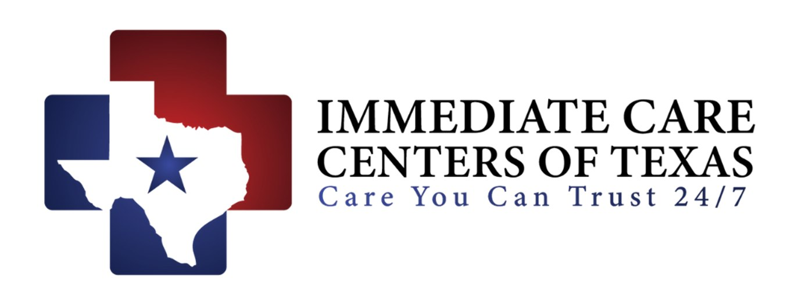

| # | Date | Member | Area | Clinic | Doctor | Status | Business Lead |
|---|
| # | Business | Type | Lead Level | Established | Notes |
|---|
| Lead ID | Doctor | Clinic | Specialty | City | Agent | Stage | Last Visit | Follow-Up By | Notes | Podcast Status |
|---|
| Date | Type | Member | Area | Clinic / Event | Doctor | Status | Lead | Notes |
|---|
| Date | Member | Area | Clinic / Business | Doctor | Reason for Cancellation | Canceled By |
|---|
visits · member_stats · team_stats · spending
referrals_by_clinic · quarterly_summary
.xlsx if you want formulas. Data is pulled live from the schedule, so the export reflects the current state at click time.| # | Date | Area | Visit Info | Assigned Member | 💰 Spending | Status | Rescheduled Date | Business Leads | Additional Notes |
|---|
| # | Date | Clinic | Area | Member | Lead Type | Source | Notes |
|---|
| # | Business | Status | Last Visit | Visits | Notes |
|---|